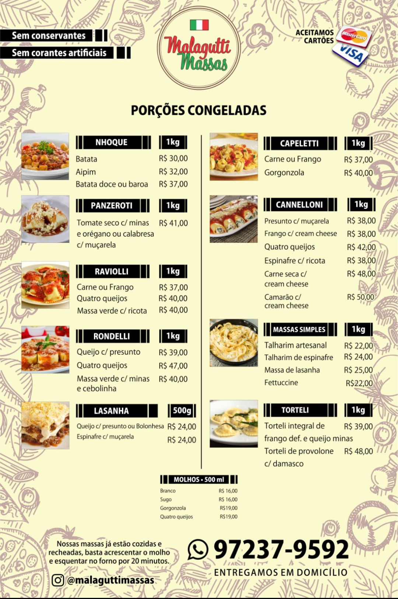
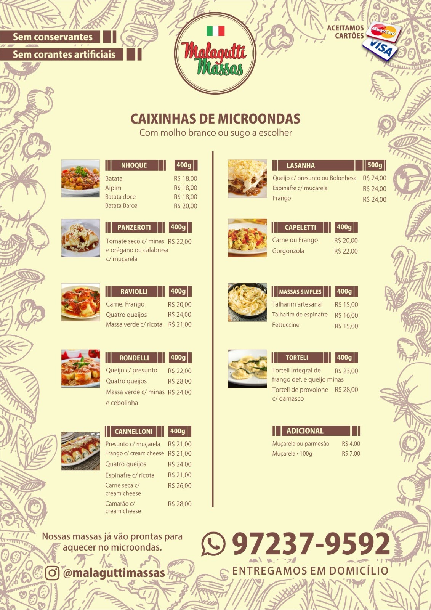
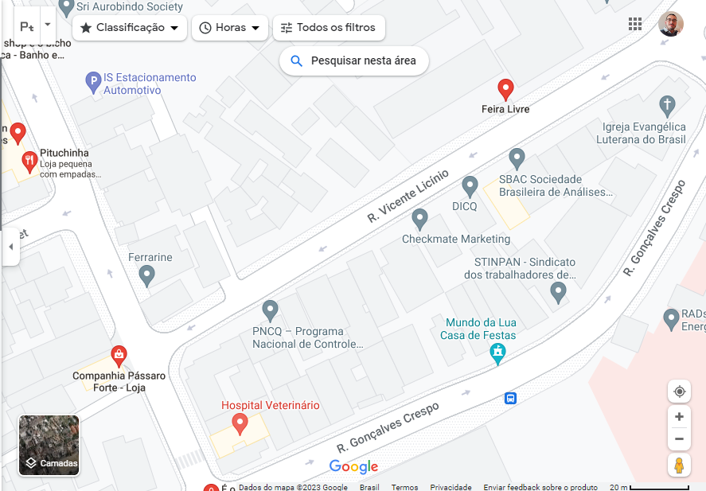

| Página inicial | Currículo | Projetos | Novidades | Contatos |
Malagutti Massas
Para projetos na área de tecnologia, no momento, não estou envolvido em nenhum. No entanto, minha família possui um negócio de vendas de massas prontas congeladas. As vendas são realizadas na Feira da Campos Sales todos os domingos, e durante a semana fazemos entregas de massas. Fico responsável pelo estoque e utilizo o Excel para gerenciar o capital de giro, além das vendas e entregas
Contatos:
Basta clicar no ícone da rede social que você será direcionado!


Onde ficamos?
